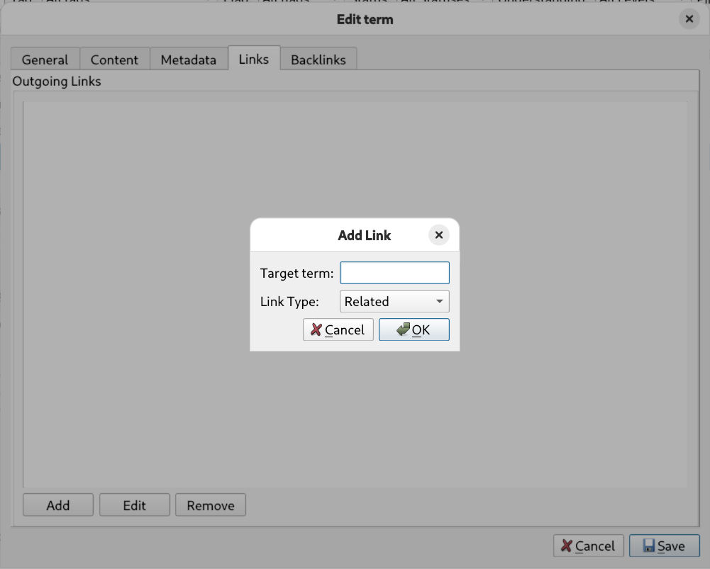
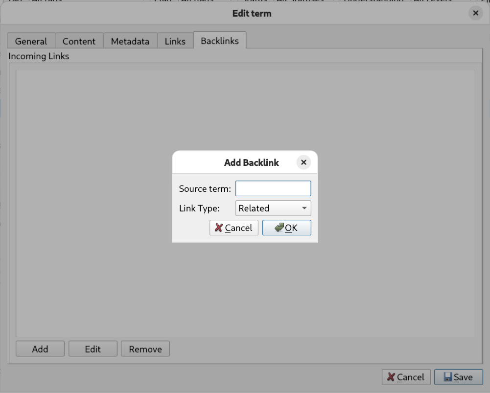

Links & relationships
Isolated facts are hard to remember; connected ones stick. Lexicon lets you link terms with typed relationships, turning a flat dictionary into a concept graph.
Links tab — outgoing relationships

In the term editor, open the Links tab to create relationships from the current term to any other term in your lexicon:
- Click Add.
- Pick the target term.
- Choose the relation type (see the table below).
- Save — the reverse direction automatically appears in the target's Backlinks.
Backlinks tab — incoming relationships

The Backlinks tab shows — and lets you create — relationships pointing to the current term from a source term. This is handy when you're working on a hub concept and want to attach many children to it without opening each child separately.
Relation types
Choosing the right type makes the graph meaningful. Lexicon offers nine:
| Type | Meaning | Example |
|---|---|---|
| Is A | Taxonomy — the source is a kind of the target. | std::vector is a container |
| Part Of | Composition — the source is a component of the target. | B-tree node part of B-tree |
| Uses | The source makes use of the target. | quicksort uses partitioning |
| Depends On | The source requires the target to work or make sense. | TLS depends on X.509 certificates |
| Implements | The source realizes the target interface or concept. | std::map implements ordered associative container |
| Related | General association worth remembering. | coroutines related to generators |
| Contrasts | Concepts best understood by comparing them. | TCP contrasts with UDP |
| Alternative To | Interchangeable solutions to the same problem. | CMake alternative to Meson |
| Parent Of | Explicit downward hierarchy link. | container parent of sequence container |
Don't overthink it When no specific type fits, Related is perfectly fine. A rough link now beats a perfect link never — you can retype it any time.
Reading in context
The graph pays off while browsing: select any term in the main table and the lower pane shows its rendered content followed by a links and backlinks summary. You see a concept's neighborhood at a glance, without opening the editor.
Coming later A visual graph view of term relationships is on the roadmap.